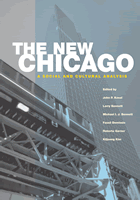

<body bgcolor="#FFFFFF" text="#000000" link="#0000FF" vlink="#CC0000" alink="#CC0000"><center><hr width="350" size="1" align="center" noshade>A comprehensive and contemporary view of Chicago, the quintessential American city, that documents its transformation into a postindustrial, global city<hr width="350" size="1" align="center" noshade><p><a href="https://cdcshoppingcart.uchicago.edu/Cart/ChicagoBook.aspx?ISBN=9781592130870&&PRESS=temple" target="_top">Buy this book!</a> | <a href="https://cdcshoppingcart.uchicago.edu/Cart/Cart.aspx?PRESS=temple" target="_top">View Cart</a> | <a href="https://cdcshoppingcart.uchicago.edu/Cart/Cart.aspx?PRESS=temple" target="_top">Check Out</a></p><p></p></center><!--none//--><h1>The New Chicago</h1>
<H2>A Social and Cultural Analysis</H2>
<h3>edited by John P. Koval, Larry Bennett, Michael I. J. Bennett, Fassil Demissie, Roberta Garner and Kiljoong Kim</h3>
<P>cloth 1-59213-087-9 $95.50, Aug 06, <FONT COLOR=#990033>Available</FONT>
<br>paper 1-59213-088-7 $46.95, Aug 06, <FONT COLOR=#990033>Available</FONT>
<br>Electronic Book 1-59213-772-5 $46.95 <FONT COLOR=#990033>Available</FONT>
<BR> 384 pp
7x10
46&nbsp;tables 18&nbsp;map(s) 10&nbsp;figures 37&nbsp;halftones 18&nbsp;color&nbsp;illustrations
</P><BLOCKQUOTE><I>"Anyone who claims to know contemporary Chicago will find this volume especially compelling. It will provoke readers to re-think what they think they know. They will find themselves devising new perspectives about the great city that Max Weber, after his own visit at the beginning of the last century, regarded as 'powerful'. I cannot imagine thinking about Chicago as we encounter it in our own new century without having </i>The New Chicago<i> nearby."</i>
<br>&#151;<b>Michael H. Ebner</b>, author of <i>Creating Chicago's North Shore</i><i></I></BLOCKQUOTE>
<p>For generations, visitors, journalists, and social scientists alike have asserted that Chicago is the quintessentially American city. Indeed, the introduction to <i>The New Chicago</i> reminds us that "to know America, you must know Chicago." The contributors boldly announce the demise of the city of broad shoulders and the transformation of its physical, social, cultural, and economic institutions into a new Chicago. In this wide-ranging book, twenty scholars, journalists, and activists, relying on data from the 2000 census and many years of direct experience with the city, identify five converging forces in American urbanization which are reshaping this storied metropolis. The twenty-six essays included here analyze Chicago by way of globalization and its impact on the contemporary city; economic restructuring; the evolution of machine-style politics into managerial politics; physical transformations of the central city and its suburbs; and race relations in a multicultural era. In elaborating on the effects of these broad forces, contributors detail the role of eight significant racial, ethnic, and immigrant communities in shaping the character of the new Chicago and present ten case studies of innovative governmental, grassroots, and civic action.
<p>Multifaceted and authoritative, <i>The New Chicago</i> offers an important and unique portrait of an emergent and new "Windy City."
<BR>&nbsp;<h2>Excerpt</h2><P>Excerpt available at <a href="http://www.temple.edu/tempress">www.temple.edu/tempress</a></p>
<BR>&nbsp;<h2>Reviews</h2>
<p><i>"This is a startling book, rich in detail and expertise, that examines choices and factors since 1960 that yielded an on-going transformation of Chicago. It tells us clearly what's new and what's not, and lays out trends, tendencies, problems, and issues in the making of an industrial city into a postindustrial global one. This book handles Chicago's distinctiveness as a question of particularities, not peculiarities."</i>
<br>&#151;<b>Zane L. Miller</b>, Charles Phelps Taft Professor of History Emeritus, University of Cincinnati
<p><i>"</i>The New Chicago<i> is a thoughtful and highly engaging look at Chicago at the start of the twenty-first century. Its contributors explore the broad forces that have shaped Chicago in recent decades with case studies exploring how these forces have affected ethnic groups, neighborhoods, and institutions within the region. The book shows the effects of global change on the city, as well as the ways in which Chicago is typical of urban centers in developed countries around the world."</i>
<br>&#151;<b>Ann Durkin Keating</b>, North Central College, and co-editor of <i>The Encyclopedia of Chicago</i>
<p><i>"The chapters on immigrants and race are balanced, sophisticated, and succinct in their coverage of a representative sample of new immigrant groups in Chicago."</i>
<br>&#151;<b><i>Multicultural Review</i></b>
<p><i>"Of particular interest to planners are the essays on the city’s physical change; sociologist Larry Bennett’s careful analysis of the Metropolis 2002 plan; and sociologist Robert Garner’s conclusion."</i><br>&#151;<b><i>Planning</i></b>
<p><i>"These 26 richly rewarding interdisciplinary essays with a strong sociological focus analyze the social, political, demographic, economic, and cultural changes in the world community since the early 1970s....this book will reward discerning readers." </i><br> &#151;<b><i>Choice</i></b>
<p><i>"The editors firmly believe that Chicago, its postindustrial formation, and the struggles that have characterized its recent history must be placed in a global context…. [A]nyone who wants to know what is happening in Chicago today does well to take a close look at this volume."</i><br> &#151;<b><i>Journal of Regional Science</i></b>
<p><i>"[T]he remarkably successful The New Chicago [is] not just an anthology, but an intensely collaborative volume--with six editors--that both continues the grand tradition of Chicago sociology and breaks new ground.... The volume deftly connects the rise of a 'new Chicago'...to major themes of contemporary urban studies." </i>
<br>&#151;<b><i>The American Journal of Sociology</i></b>
<BR>&nbsp;<h2>Contents</h2><P>
<p>Preface ix
<br>PART I. INTRODUCTION
<br>1. An Overview and Point of View <br>John P. Koval
<br>PART II. CONVERGING FORCES <br>
2. Globalization and the Remaking of Chicago <br>Fassil Demissie <br>
3. Economic Restructuring: Chicago’s Precarious Balance <br>
David Moberg
<br>4. Chicago’s New Politics of Growth <br>Larry Bennett
<br>5. The Physical Transformation of Metropolitan Chicago Chicago’s Central Area <br>Charles S. Suchar <br>
The Emergent Suburban Landscape <br>Kenneth Fidel
<br>6. Race Relations Chicago Style: Past, Present, and Future <br>Michael I. J. Bennett and Richard T. Schaefer
<br>PART III. THE IMMIGRANT PRESENCE
<br>7. Chicago: The Immigrant Capital of the Heartland <br>John P. Koval and Kenneth Fidel
<br>
8. Latinos of the New Chicago <br>Rob Paral
<br>9. New Chicago Polonia: Urban and Suburban <br>Mary Patrice Erdmans
<br>10. Asian Indians in Chicago <br>Padma Rangaswamy
<br>11. Re-Visioning Filipino American Communities: Evolving Identities, Issues, and Organizations <br>Yvonne M. Lau
<br>12. The Korean Presence in Chicago <br>Kiljoong Kim
<br>13. Chicago’s Chinese Americans: From Chinatown and Beyond <br>
Yvonne M. Lau
<br>14. Immigrants from the Arab World <br>Louise Cainkar
<br>15. Immigrants at Work <br>John P. Koval
<br>PART IV. CONTESTED REINVENTION AND CIVIC AGENCY: TEN CASE STUDIES
<br>16. The Rebirth of Bronzeville: Contested Space and Contrasting Visions <br>Michael I. J. Bennett
<br>17. Devon Avenue: A World Market <br>Padma Rangaswamy
<br>18. The Affordable Housing Crisis in the Chicago Region <br>Aurie A. Pinneck and Howard Stanback
<br>19. Back to Its Roots: The Industrial Areas Foundation and United Power for Action and Justice <br>David Moberg
<br>20. Chicago School Reform: Advancing the Global City Agenda <br>Pauline Lipman
<br>21. Police and the Globalizing City: Innovation and Contested Reinvention <br>David Plebanski and Roberta Garner
<br>22. Transforming Public Housing <br>Larry Bennett
<br>23. Regionalism in a Historically Divided Metropolis <br>Larry Bennett <br>
24. Coalition Politics at America’s Premier Transportation Hub <br>Joseph Schwieterman <br>25. Urban Beauti.cation: The Construction of a New Identity in Chicago <br>Costas Spirou
<br>PART V. CONCLUSION
<br>26. Learning from Chicago <br>
Roberta Garner
<br>References
<br>About the Contributors
<br>Index
<br>Maps follow page
</P><BR>&nbsp;<H2>About the Author(s)</H2>
<P><b>John P. Koval</b> is Associate Professor of Sociology at DePaul University, Senior Research Fellow at the Monsignor John J. Egan Urban Center, and Visiting Fellow at the Institute for Latino Studies, The University of Notre Dame.</P>
<P><b>Larry Bennett</b> is Professor of Political Science at DePaul University.</P>
<P><b>Michael I. Bennett</b> is Associate Professor of Sociology at DePaul University and Executive Director of the Monsignor John J. Egan Urban Center.</P>
<P><b>Fassil Demissie</b> is Associate Professor of Public Policy Studies at DePaul University.</P>
<P><b>Roberta Garner</b> is Professor of Sociology at DePaul University.</P>
<P><b>Kiljoong Kim</b> is Lecturer in Sociology at DePaul University and Research Director at the Monsignor John J. Egan Urban Center. He is also a Doctoral student in Sociology at the University of Illinois at Chicago.</P>
<BR><H2>Subject Categories</H2>
<p><A HREF="/tempress/urban.html" TARGET="_top">Urban Studies</a>
<BR><A HREF="/tempress/sociology.html" TARGET="_top">Sociology</a>
<BR><A HREF="/tempress/political.html" TARGET="_top">Political Science and Public Policy</a>
</p>
<p align="center"><a href="https://cdcshoppingcart.uchicago.edu/Cart/ChicagoBook.aspx?ISBN=9781592130870&&PRESS=temple" target="_top">Buy this book!</a> | <a href="https://cdcshoppingcart.uchicago.edu/Cart/Cart.aspx?PRESS=temple" target="_top">View Cart</a> | <a href="https://cdcshoppingcart.uchicago.edu/Cart/Cart.aspx?PRESS=temple" target="_top">Check Out</a></p><p><font face="Arial" size="1"><a href="copyright.html" onMouseOver="window.status='Web Copyright Policy';return true;" onMouseOut="window.status=''" title="Web Copyright Policy">&copy;</a> 2015 <a href="http://www.temple.edu" target="new" onMouseOver="window.status='Link to Temple University home page';return true;" onMouseOut="window.status=''" title="Link to Temple University home page">Temple University</a>. All Rights Reserved. http://www.temple.edu/tempress/titles/1750_reg.html</font></p>